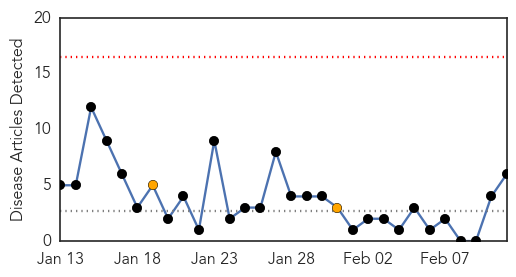
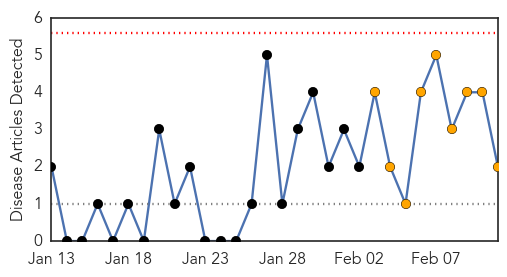
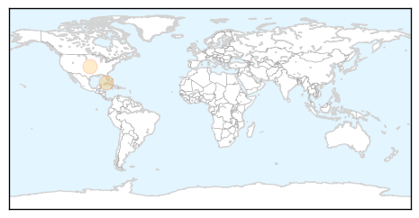

Cholera
30-Day Web Trend
0 alerts, 2 warnings

30-Day Twitter Trend
2 alerts, 0 warnings

Article Locations
Article Confidences
Top Articles:
- 0.993
- Seven killed, 80 hospitalized in suspected cholera outbreak in Kenya
- 0.983
- Six dead, 80 admitted after cholera outbreak in Migori - Kenya
- 0.921
- Zambia : National Public Health Institute vital-Kasonde
- 0.861
- 19 lives lost to Cholera in Mozambique
- 0.674
- Cholera outbreak kills 19 in flood-hit Mozambique
- 0.532
- Torit under water-borne diseases threat
Top Tweets:
-
No tweets found for Feb 11, 2015
Pertussis
30-Day Web Trend
0 alerts, 1 warnings

30-Day Twitter Trend
0 alerts, 0 warnings

Article Locations
Article Confidences

Top Articles:
Top Tweets:
-
No tweets found for Feb 11, 2015